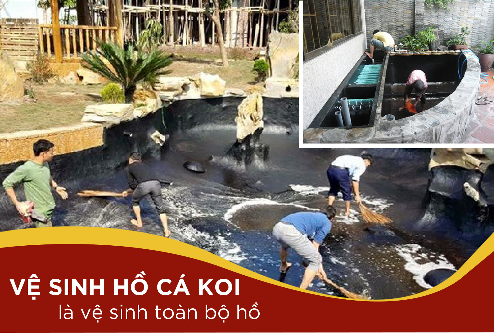

0123456789
0123456789
0123456789
0123456789
Quy trình vệ sinh hồ cá koi chuẩn chỉ
Quy trình vệ sinh hồ cá Koi đơn giản tưởng chừng là công việc đơn giản nhưng lại vô cùng cần thiết đối với hồ Koi. Bất kì ai cũng có thể chơi Koi và khiến lối chơi này trở thành thú vui tao nhã, thư giãn tinh thần. Tuy vậy, không phải ai cũng biết cách vệ sinh, chăm sóc những em này. Như bạn đã biết, Koi vốn là loài cá ưa sạch sẽ nên hồ nước nếu không được vệ sinh “chuẩn chỉ” sẽ khiến cá lên màu không tốt hoặc làm cho Koi bị bệnh chết. Vậy làm thế nào để vệ sinh hồ Koi đạt tiêu chuẩn nhất, dưới đây, chúng tôi sẽ hướng dẫn đến bạn những kiến thức liên quan đến vấn đề này
Trước tiên, bạn cần phải hiểu rằng, HỒ KOI GIỐNG NHƯ NGÔI NHÀ CỦA CÁ KOI, cũng giống như bạn đang sinh sống trong chính ngôi nhà của bạn vậy. Tuy nhiên, nhà của bạn thường có đầy đủ phòng khách, phòng ngủ, phòng vệ sinh…nhưng hồ Koi thì lại không có những căn phòng này, đặc biệt là phòng vệ sinh. Việc ăn-ngủ-đi vệ sinh của Koi đều xung quanh chiếc hồ này. Chính vì thế, những người chơi Koi lâu năm thường khuyên rằng, HÃY TẠO CHO HỒ KOI KHÔNG GIAN SỐNG THOẢI MÁI GIỐNG NHƯ BẠN ĐANG SỐNG TRONG NGÔI NHÀ CỦA BẠN VẬY. Có nghĩa là, ngoài việc đảm bảo chế độ ăn, giấc ngủ cho Koi thì bạn cũng cần chú ý đến vệ sinh của Koi để sao cho Koi cảm giác như vừa được “chơi trong phòng khách, ngủ trong phòng ngủ và đi vệ sinh trong phòng vệ sinh”.
Sau khoảng một thời gian sinh sống trong hồ, cá Koi sẽ thường có những hoạt động như ăn uống, thải chất bẩn nên khiến hồ nuôi xảy ra một số tình trạng như rêu tảo, chất bẩn. Cụ thể như sau:
− Đối với hoạt động ăn và uống: Koi vốn được biết đến là một trong những động vật ăn tạp và thường ăn theo thói quen của người nuôi. Nhiều người thấy chúng ăn tạp, háu ăn, cho bao nhiêu ăn cũng hết nên rất hay cho chúng ăn nhiều, ăn tràn lan, không kiểm soát số lượng thức ăn.
Tuy nhiên, cũng giống như người, Koi cần phải có thời gian để tiêu hóa các loại thức ăn nên khi cho ăn, chúng không thể ăn hết ngay mà sẽ đọng lại trong hồ, rớt xuống đáy hồ và lâu dần sẽ bị ôi thiu, bốc mùi thối. Đây cũng chính là nguyên nhân khiến nước bị đục, ô nhiễm và bị hôi tanh.
− Đối với chất thải của cá Koi: Sau khi ăn xong thì Koi cần phải tiêu hóa và thải phân, khi phân rơi xuống đáy hồ và dồn nén lâu ngày cũng sẽ làm ô nhiễm nguồn nước. Chưa kể đến, những loại rác thải như cành cây, xác động vật chết lắng xuống hồ, lâu ngày bị mục, kết hợp cùng thức ăn dư thừa và phân cá lắng xuống đáy hồ sẽ tạo điều kiện để vi khuẩn sinh sôi và nảy nở khiến đàn Koi bị bệnh.
−Đối với hoạt động hô hấp của Koi: Khi thở, Koi thường sẽ nhả ra một lượng lớn amoniac-vốn được biết đến là hợp chất vô cơ gây mùi rất khó chịu. Ngoài ra, chính hợp chất amoniac này là nguyên nhân khiến vi khuẩn phát triển, lây lan nhanh chóng, vừa làm ô nhiễm nguồn nước vừa khiến Koi bị ảnh hưởng về sức khỏe.
− Đối với hệ thống lọc nước: Dù rất cẩn thận nhưng cũng không thể tránh được hệ thống lọc nước bị cát bụi bám bẩn lâu ngày làm hỏng hóc. Trong khi đó, bộ phận lọc nước được cho là bộ phận đầu não của hồ Koi, giúp lọc nguồn nước và đào thải những chất cặn bã có trong hồ.
−Đối với sự hình thành rêu và tảo: Khi hồ Koi không được vệ sinh thường xuyên và bị bám đầy rong rêu, tảo. Khi rêu tảo phát triển quá mạnh cũng chính là nguyên nhân khiến cho nguồn nước của hồ cá bị vẩn đục và cũng có thể chính là nguyên nhân khiến hồ Koi mất đi thẩm mỹ.
Như vậy, có thể thấy, khi không vệ sinh hồ Koi thường xuyên thì chắc chắn, môi trường sinh sống của Koi sẽ bị ảnh hưởng trầm trọng, ảnh hương trực tiếp đến sự sinh trưởng và phát triển của Koi.
Những vị trí cần phải vệ sinh hồ Koi
Quy trình vệ sinh hồ Koi cần phải được thực hiện cả tại đáy, thường thành hồ và những bộ phận nằm trong các máy móc được lắp đặt tại hồ:
−Vệ sinh đáy hồ Koi: Cần phải được ưu tiên vệ sinh hàng đầu bởi đáy hồ là nơi chứa nhiều chất cặn bã, thức ăn dư thừa nhất, gây lắng đọng, thối rữa tạo điều kiện để vi khuẩn sinh sôi. Ngoài ra, ở đáy hồ còn có rất nhiều rêu mọc và làm đục nước trong hồ.
− ường thành của hồ Koi: Những mảng rong rêu và tảo bám lâu ngày tại thành hồ là nguyên nhân khiến nước trong hồ bị đục, làm bẩn hồ và làm rợp hồ, làm ảnh hưởng trực tiếp đến khả năng lên màu của Koi.
− Hệ thống bộ phận máy móc lắp đặt trong hồ: Đặc biệt là hệ thống lọc nước giữ vai trò cực kỳ quan trọng để giúp đảm bảo nguồn nước trong hồ luôn sạch, cung cấp oxy và lọc thải chất thải ứ đọng trong hồ nên cần được vệ sinh sạch sẽ, tránh làm cho bộ lọc bị bám chặt nhiều bụi bẩn bên trong và làm hỏng bộ lọc.
Thời điểm tốt nhất để vệ sinh hồ Koi là khi thời tiết ấm lên, không nên vệ sinh quá nhiều vào mùa đông sẽ khiến cá bị xáo trộn. Khi thực hiện vệ sinh hồ Koi, chúng ta cần phải thực hiện theo các nguyên tắc lần lượt, cẩn thận, tỉ mỉ và chuẩn xác trong từng khâu:
− Đầu tiên là giảm bớt nước trong hồ Koi của bạn
Giảm bớt nước trong hồ sẽ cho phép làm sạch hồ tốt hơn. Nếu được thực hiện đúng cách, phương pháp này sẽ khiến hồ Koi trông sạch hơn mà không làm tổn thương hệ sinh thái. Để giảm nước trong hồ, bạn hãy sử dụng máy bơm để bơm nước vào một tank ( thùng chứa lớn) rồi từ từ cho từng chú Koi vào trong thùng đó. Thùng chứa phải rộng và đủ lớn để Koi bơi trong khi bạn làm sạch hồ. Sử dụng lưới skimmer để vớt cá koi ra và đặt chúng nhẹ nhàng vào thùng chứa nước hồ Koi. Khi bạn có tất cả cá koi trong thùng chứa, bạn nên đậy nắp thùng bằng lưới hoặc nắp thoáng khí để cá Koi không nhảy ra ngoài.
Lưu ý: Việc bảo vệ Koi trong cùng một nguồn nước sẽ tốt hơn cho sức khỏe của chúng.
Sau đó, dùng lưới dày để có gậy kèm theo (gọi là lưới Skimmer) để vớt những chất bẩn có trên bề mặt hồ. Bạn cũng có thể sử dụng lưới skimmer một cách thường xuyên để duy trì hồ cá koi của bạn và đảm bảo nước sạch
−Tiếp theo là vệ sinh những chất cặn bã, rác thải tại đáy hồ Koi
Để giảm thiểu thời gian cho công việc vệ sinh đáy hồ Koi, bạn nên chuẩn bị một thiết bị máy vệ sinh đáy hồ Koi. Những chiếc máy này sẽ hoạt động tương tự giống như một chiếc máy hút bụi bình thường nhưng trong nước. Phần đầu máy sẽ gắn thêm một chổi cọ bể, khi chất bẩn được chổi cọ làm tung ra khỏi đáy hồ thì ngay lập tức, nó sẽ được máy bơm chính hút và đưa ra ngoài dễ dàng.
Nhìn chung, khi vệ sinh đáy hồ, bạn cần phải có dụng cụ vệ sinh. Hiện nay, những dụng cụ này cũng khá phổ biến và chi phí khá rẻ, tiện lợi phục vụ nhu cầu của người mua. Việc vệ sinh đáy cũng nên định kỳ thường xuyên để đảm bảo nước luôn sạch và tinh khiết.
−Vệ sinh bể lọc cho hồ Koi
Bể lọc được cho là hạng mục kỹ thuật quan trọng nhất trong cấu tạo của một Koi. Bể lọc chính là nơi lưu giữ lại những chất thải, chất cặn bẩn được thải ra của hồ Koi. Vì vậy, cần phải được thường xuyên vệ sinh để có thể đảm bảo chúng luôn hoạt động tốt nhất có thể. Thông thường, một bể lọc sẽ có cấu tạo để tự thải những chất cặn bã thông qua bộ phận xả ra ngoài nhưng chúng vẫn chưa đảm bảo đẩy hết được các chất thải ra ngoài 100%.
Một số vật thể tại phần khoang lọc tinh như nham thạch, than hoạt tính, gốm lọc…khi dùng lâu ngày sẽ bị bào mòn và trung hòa điện tích. Vì thế, cần phải thay thế những vật thể lọc trong quá trình vệ sinh hồ Koi để giúp hồ Koi luôn sạch, tinh khiết nhất.
−Vệ sinh rêu tảo bám xung quanh tường, thành của hồ Koi: Rêu tảo nếu ở mức độ vừa thì sẽ giúp làm hài hòa cho hệ sinh thái hồ nhưng nếu phát triển quá mạnh thì sẽ gây phản tác dụng làm gây hại đến môi trường sống. Vì thế, cần phải có giải pháp kiếm soát lượng rêu tảo để Koi không bị ăn phải vi khuẩn xâm nhập đe dọa đến sức khỏe Koi.
Để làm sạch rêu tảo bám trên tường thành hồ thì cần sử dụng loại thuốc diệt rêu, điều chỉnh độ sáng và kiểm soát lượng thức ăn vừa đủ cho koi.
−Vệ sinh cát và bụi bẩn, cặn bã trong các bộ phận lọc, xả nước: Có thể dùng vòi để xịt các bộ phận lọc, đặc biệt là những tấm lọc. Xịt vòi nước chuyên dụng để cho đến khi nào sạch thì lắp tấm lọc lại như cũ. Đối với những bộ phận máy móc thì lấy khăn lau cho sạch.
−Thay nước trong hồ: Công việc thay nước trong hồ Koi cũng được xem là các bước vệ sinh quan trọng. Cần phải thay nước định kỳ sau khi tổng vệ sinh hồ. Khi đã vệ sinh hồ Koi cũng như lau sạch các máy móc lắp đặt thì bạn nên thay nước trong hồ bởi nguồn nước cũ có thể bị vẩn đục và ô nhiễm.
+Trước khi thay nước, bạn cần phải xả hết toàn bộ nước trong hồ trước đỏ rồ khử bằng clo chứa trong nước (đặc biệt là nước máy) bằng cách phơi hồ dưới trời nắng khoảng 1 ngày. Bạn cũng có thể dùng than hoạt tính khử clo cũng đều rất tốt.
+Khi tiến hành thay nước thì không nên thay đổi ngột và cùng lúc vì có thể khiến cá bị sốc và chết. Cần phải tiến hành thay từ từ, đảm bảo làm sao cứ cách khoảng 2 ngày thì lại rút khoảng 1/3 thể tích nước cũ trong hồ cho tới khi nào thay được hết và nước trong hồ đã sạch là được.
Cho cá Koi làm quen dần với nước thay trong hồ khi đang còn trong thùng chứa. Sau khi cá koi của bạn đã được cung cấp đủ thời gian để làm quen với nước hồ mới trong thùng chứa, hãy sử dụng lưới skimmer để nhẹ nhàng đặt cá koi trở lại trong hồ đã vệ sinh sạch. Nếu bạn không loại bỏ cá koi của bạn ra khỏi hồ trước khi vệ sinh, bạn có thể bỏ qua bước này.
Mạng xã hội:


 Trang chủ
Trang chủ